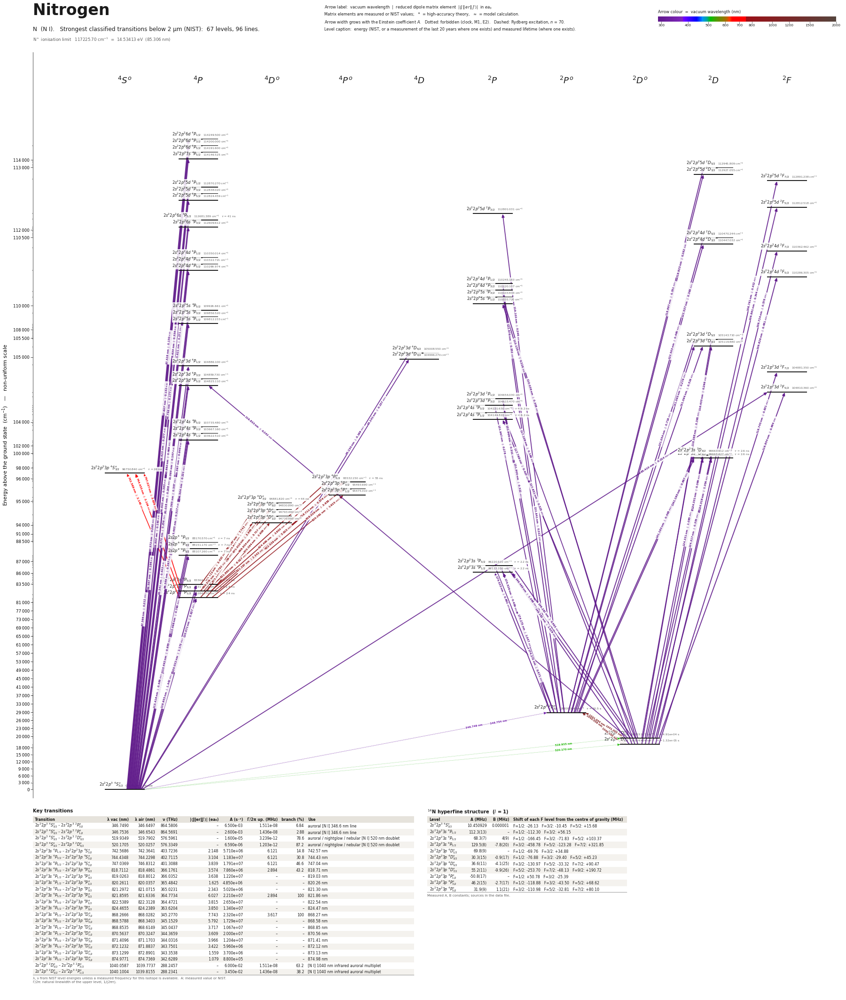

Nitrogen energy level diagram
Energy levels and transitions of neutral nitrogen (N I): the 96 strongest classified lines below 2 µm from the NIST Atomic Spectra Database and the 67 levels they connect, each line with its vacuum wavelength, frequency and, for 88 of them, the reduced dipole matrix element derived from the NIST transition rate. Measured lifetimes, transition rates, hyperfine constants and isotope shifts from the literature are included, each with its citation.
Hover a line or a level to isolate it, click to keep it selected. Scroll to zoom, drag to move.

Download: diagram (PDF) diagram (SVG) transitions (CSV) levels (CSV) source code

Key transitions of nitrogen
| Transition | λ vac (nm) | λ air (nm) | ν (THz) | |⟨J‖er‖J′⟩| (ea₀) | A (s⁻¹) | Γ/2π up. (MHz) | branch (%) | Use |
|---|---|---|---|---|---|---|---|---|
| 2s22p3 4S°3/2 – 2s22p3 2P°3/2 | 346.7490 | 346.6497 | 864.5806 | – | 6.500e-03 | 1.511e-08 | 6.84 | auroral [N I] 346.6 nm line |
| 2s22p3 4S°3/2 – 2s22p3 2P°1/2 | 346.7536 | 346.6543 | 864.5691 | – | 2.600e-03 | 1.436e-08 | 2.88 | auroral [N I] 346.6 nm line |
| 2s22p3 4S°3/2 – 2s22p3 2D°3/2 | 519.9349 | 519.7902 | 576.5961 | – | 1.600e-05 | 3.239e-12 | 78.6 | auroral / nightglow / nebular [N I] 520 nm doublet |
| 2s22p3 4S°3/2 – 2s22p3 2D°5/2 | 520.1705 | 520.0257 | 576.3349 | – | 6.590e-06 | 1.203e-12 | 87.2 | auroral / nightglow / nebular [N I] 520 nm doublet |
| 2s22p23s 4P1/2 – 2s22p23p 4S°3/2 | 742.5686 | 742.3641 | 403.7236 | 2.148 | 5.710e+06 | 6.121 | 14.8 | 742.57 nm |
| 2s22p23s 4P3/2 – 2s22p23p 4S°3/2 | 744.4348 | 744.2298 | 402.7115 | 3.104 | 1.183e+07 | 6.121 | 30.8 | 744.43 nm |
| 2s22p23s 4P5/2 – 2s22p23p 4S°3/2 | 747.0369 | 746.8312 | 401.3088 | 3.839 | 1.791e+07 | 6.121 | 46.6 | 747.04 nm |
| 2s22p23s 4P3/2 – 2s22p23p 4P°5/2 | 818.7112 | 818.4861 | 366.1761 | 3.574 | 7.860e+06 | 2.894 | 43.2 | 818.71 nm |
| 2s22p23s 4P1/2 – 2s22p23p 4P°3/2 | 819.0263 | 818.8012 | 366.0352 | 3.638 | 1.220e+07 | – | – | 819.03 nm |
| 2s22p23s 4P1/2 – 2s22p23p 4P°1/2 | 820.2611 | 820.0357 | 365.4842 | 1.625 | 4.850e+06 | – | – | 820.26 nm |
| 2s22p23s 4P3/2 – 2s22p23p 4P°3/2 | 821.2972 | 821.0715 | 365.0231 | 2.343 | 5.020e+06 | – | – | 821.30 nm |
| 2s22p23s 4P5/2 – 2s22p23p 4P°5/2 | 821.8595 | 821.6336 | 364.7734 | 6.027 | 2.210e+07 | 2.894 | 100 | 821.86 nm |
| 2s22p23s 4P3/2 – 2s22p23p 4P°1/2 | 822.5389 | 822.3128 | 364.4721 | 3.815 | 2.650e+07 | – | – | 822.54 nm |
| 2s22p23s 4P5/2 – 2s22p23p 4P°3/2 | 824.4655 | 824.2389 | 363.6204 | 3.850 | 1.340e+07 | – | – | 824.47 nm |
| 2s22p23s 4P5/2 – 2s22p23p 4D°7/2 | 868.2666 | 868.0282 | 345.2770 | 7.743 | 2.320e+07 | 3.617 | 100 | 868.27 nm |
| 2s22p23s 4P3/2 – 2s22p23p 4D°5/2 | 868.5788 | 868.3403 | 345.1529 | 5.792 | 1.729e+07 | – | – | 868.58 nm |
| 2s22p23s 4P1/2 – 2s22p23p 4D°3/2 | 868.8535 | 868.6149 | 345.0437 | 3.717 | 1.067e+07 | – | – | 868.85 nm |
| 2s22p23s 4P1/2 – 2s22p23p 4D°1/2 | 870.5637 | 870.3247 | 344.3659 | 3.609 | 2.000e+07 | – | – | 870.56 nm |
| 2s22p23s 4P3/2 – 2s22p23p 4D°3/2 | 871.4096 | 871.1703 | 344.0316 | 3.966 | 1.204e+07 | – | – | 871.41 nm |
| 2s22p23s 4P5/2 – 2s22p23p 4D°5/2 | 872.1232 | 871.8837 | 343.7501 | 3.422 | 5.960e+06 | – | – | 872.12 nm |
| 2s22p23s 4P3/2 – 2s22p23p 4D°1/2 | 873.1299 | 872.8901 | 343.3538 | 1.559 | 3.700e+06 | – | – | 873.13 nm |
| 2s22p23s 4P5/2 – 2s22p23p 4D°3/2 | 874.9771 | 874.7369 | 342.6289 | 1.079 | 8.800e+05 | – | – | 874.98 nm |
| 2s22p3 2D°5/2 – 2s22p3 2P°3/2 | 1040.0587 | 1039.7737 | 288.2457 | – | 6.000e-02 | 1.511e-08 | 63.2 | [N I] 1040 nm infrared auroral multiplet |
| 2s22p3 2D°5/2 – 2s22p3 2P°1/2 | 1040.1004 | 1039.8155 | 288.2341 | – | 3.450e-02 | 1.436e-08 | 38.2 | [N I] 1040 nm infrared auroral multiplet |
λ, ν from NIST level energies unless a measured frequency for this isotope is available. A: measured value or NIST. Γ/2π: natural linewidth of the upper level, 1/(2πτ).
14N hyperfine structure (I = 1)
| Level | A (MHz) | B (MHz) | Shift of each F level from the centre of gravity (MHz) |
|---|---|---|---|
| 2s22p3 4S°3/2 | 10.450929 | 0.000001 | F=1/2: -26.13 F=3/2: -10.45 F=5/2: +15.68 |
| 2s22p23s 4P1/2 | 112.3(13) | – | F=1/2: -112.30 F=3/2: +56.15 |
| 2s22p23s 4P3/2 | 68.3(7) | 4(9) | F=1/2: -166.45 F=3/2: -71.83 F=5/2: +103.37 |
| 2s22p23s 4P5/2 | 129.5(8) | -7.8(20) | F=3/2: -458.78 F=5/2: -123.28 F=7/2: +321.85 |
| 2s22p23p 4D°1/2 | 69.8(9) | – | F=1/2: -69.76 F=3/2: +34.88 |
| 2s22p23p 4D°3/2 | 30.3(15) | -0.9(17) | F=1/2: -76.88 F=3/2: -29.40 F=5/2: +45.23 |
| 2s22p23p 4D°5/2 | 36.6(11) | -4.1(25) | F=3/2: -130.97 F=5/2: -33.32 F=7/2: +90.47 |
| 2s22p23p 4D°7/2 | 55.2(11) | -9.9(26) | F=5/2: -253.70 F=7/2: -48.13 F=9/2: +190.72 |
| 2s22p23p 4P°1/2 | -50.8(17) | – | F=1/2: +50.78 F=3/2: -25.39 |
| 2s22p23p 4P°3/2 | 46.2(15) | -2.7(17) | F=1/2: -118.88 F=3/2: -43.50 F=5/2: +68.62 |
| 2s22p23p 4P°5/2 | 31.9(9) | 1.1(21) | F=3/2: -110.98 F=5/2: -32.81 F=7/2: +80.10 |
Measured A, B constants; sources in the data file.
Listed N transitions below 2 µm
| Lower level | Upper level | λ vacuum (nm) | λ air (nm) | ν (THz) | Type | |⟨J‖er‖J′⟩| (ea₀) | A (s⁻¹) | Branching (%) | Source of matrix element / A |
|---|---|---|---|---|---|---|---|---|---|
| 2s22p3 4S°3/2 | 2s22p26d 4P1/2 | 87.5277 | – | 3425.1138 | E1 | 0.150 NIST | 3.400e+07 NIST | – | NIST ASD (accuracy D+) |
| 2s22p3 4S°3/2 | 2s22p26d 4P3/2 | 87.5657 | – | 3423.6299 | E1 | 0.212 NIST | 3.390e+07 NIST | – | NIST ASD (accuracy D+) |
| 2s22p3 4S°3/2 | 2s22p26d 4P5/2 | 87.5721 | – | 3423.3780 | E1 | 0.260 NIST | 3.390e+07 NIST | – | NIST ASD (accuracy D+) |
| 2s22p3 4S°3/2 | 2s22p27s 4P5/2 | 87.6067 | – | 3422.0267 | E1 | 0.132 NIST | 8.810e+06 NIST | – | NIST ASD (accuracy D+) |
| 2s22p3 4S°3/2 | 2s22p25d 4P1/2 | 88.5973 | – | 3383.7656 | E1 | 0.196 NIST | 5.580e+07 NIST | – | NIST ASD (accuracy D+) |
| 2s22p3 4S°3/2 | 2s22p25d 4P3/2 | 88.6226 | – | 3382.7987 | E1 | 0.277 NIST | 5.580e+07 NIST | – | NIST ASD (accuracy D+) |
| 2s22p3 4S°3/2 | 2s22p25d 4P5/2 | 88.6333 | – | 3382.3922 | E1 | 0.339 NIST | 5.580e+07 NIST | – | NIST ASD (accuracy D+) |
| 2s22p3 4S°3/2 | 2s22p26s 4P5/2 | 88.7458 | – | 3378.1031 | E1 | 0.177 NIST | 1.510e+07 NIST | 61.9 | NIST ASD (accuracy D+) |
| 2s22p3 4S°3/2 | 2s22p26s 4P3/2 | 88.8024 | – | 3375.9512 | E1 | 0.144 NIST | 1.510e+07 NIST | – | NIST ASD (accuracy D+) |
| 2s22p3 4S°3/2 | 2s22p24d 4P1/2 | 90.6207 | – | 3308.2102 | E1 | 0.271 NIST | 9.990e+07 NIST | – | NIST ASD (accuracy D+) |
| 2s22p3 4S°3/2 | 2s22p24d 4P3/2 | 90.6432 | – | 3307.3920 | E1 | 0.383 NIST | 9.990e+07 NIST | – | NIST ASD (accuracy D+) |
| 2s22p3 4S°3/2 | 2s22p24d 4P5/2 | 90.6619 | – | 3306.7100 | E1 | 0.469 NIST | 9.980e+07 NIST | – | NIST ASD (accuracy D+) |
| 2s22p3 4S°3/2 | 2s22p25s 4P5/2 | 90.9697 | – | 3295.5184 | E1 | 0.256 NIST | 2.930e+07 NIST | – | NIST ASD (accuracy D+) |
| 2s22p3 4S°3/2 | 2s22p25s 4P3/2 | 91.0278 | – | 3293.4156 | E1 | 0.208 NIST | 2.920e+07 NIST | – | NIST ASD (accuracy D+) |
| 2s22p3 4S°3/2 | 2s22p25s 4P1/2 | 91.0645 | – | 3292.0879 | E1 | 0.147 NIST | 2.920e+07 NIST | – | NIST ASD (accuracy D+) |
| 2s22p3 4S°3/2 | 2s22p23d 4D5/2 | 95.2303 | – | 3148.0771 | E1 | 0.169 NIST | 1.120e+07 NIST | – | NIST ASD (accuracy B) |
| 2s22p3 4S°3/2 | 2s22p23d 4D3/2 | 95.2415 | – | 3147.7090 | E1 | 0.157 NIST | 1.450e+07 NIST | – | NIST ASD (accuracy B) |
| 2s22p3 4S°3/2 | 2s22p23d 4P1/2 | 95.3415 | – | 3144.4062 | E1 | 0.403 NIST | 1.900e+08 NIST | – | NIST ASD (accuracy B) |
| 2s22p3 4S°3/2 | 2s22p23d 4P3/2 | 95.3655 | – | 3143.6156 | E1 | 0.557 NIST | 1.810e+08 NIST | – | NIST ASD (accuracy B) |
| 2s22p3 4S°3/2 | 2s22p23d 4P5/2 | 95.3970 | – | 3142.5777 | E1 | 0.645 NIST | 1.620e+08 NIST | – | NIST ASD (accuracy B) |
| 2s22p3 4S°3/2 | 2s22p23d 2F5/2 | 95.4104 | – | 3142.1355 | E1 (intercombination) | 0.224 NIST | 1.950e+07 NIST | – | NIST ASD (accuracy B+) |
| 2s22p3 4S°3/2 | 2s22p24s 4P5/2 | 96.3990 | – | 3109.9115 | E1 | 0.397 NIST | 5.940e+07 NIST | – | NIST ASD (accuracy A) |
| 2s22p3 4S°3/2 | 2s22p24s 4P3/2 | 96.4626 | – | 3107.8633 | E1 | 0.317 NIST | 5.660e+07 NIST | – | NIST ASD (accuracy A) |
| 2s22p3 4S°3/2 | 2s22p24s 4P1/2 | 96.5041 | – | 3106.5247 | E1 | 0.221 NIST | 5.520e+07 NIST | – | NIST ASD (accuracy A) |
| 2s22p3 2D°5/2 | 2s22p25d 2F7/2 | 106.7614 | – | 2808.0592 | E1 | 0.412 NIST | 3.530e+07 NIST | – | NIST ASD (accuracy C) |
| 2s22p3 2D°3/2 | 2s22p25d 2F5/2 | 106.8612 | – | 2805.4381 | E1 | 0.344 NIST | 3.280e+07 NIST | – | NIST ASD (accuracy C) |
| 2s22p3 2D°5/2 | 2s22p24d 2F7/2 | 109.7237 | – | 2732.2484 | E1 | 0.576 NIST | 6.350e+07 NIST | – | NIST ASD (accuracy C) |
| 2s22p3 2D°3/2 | 2s22p24d 2F5/2 | 109.8260 | – | 2729.7041 | E1 | 0.481 NIST | 5.910e+07 NIST | – | NIST ASD (accuracy C) |
| 2s22p3 2D°5/2 | 2s22p25s 2P3/2 | 110.0360 | – | 2724.4950 | E1 | 0.308 NIST | 3.600e+07 NIST | – | NIST ASD (accuracy D+) |
| 2s22p3 2D°3/2 | 2s22p25s 2P1/2 | 110.1291 | – | 2722.1918 | E1 | 0.229 NIST | 3.990e+07 NIST | – | NIST ASD (accuracy D+) |
| 2s22p3 4S°3/2 | 2s2p4 4P1/2 | 113.4165 | – | 2643.2872 | E1 | 0.466 NIST | 1.510e+08 NIST | 100 | NIST ASD (accuracy B) |
| 2s22p3 4S°3/2 | 2s2p4 4P3/2 | 113.4415 | – | 2642.7056 | E1 | 0.655 NIST | 1.490e+08 NIST | 100 | NIST ASD (accuracy B) |
| 2s22p3 4S°3/2 | 2s2p4 4P5/2 | 113.4980 | – | 2641.3892 | E1 | 0.790 NIST | 1.440e+08 NIST | 100 | NIST ASD (accuracy B) |
| 2s22p3 2D°5/2 | 2s22p23d 2D5/2 | 116.3884 | – | 2575.7942 | E1 | 0.390 NIST | 3.250e+07 NIST | – | NIST ASD (accuracy B) |
| 2s22p3 2D°3/2 | 2s22p23d 2D3/2 | 116.4325 | – | 2574.8186 | E1 | 0.296 NIST | 2.820e+07 NIST | – | NIST ASD (accuracy B) |
| 2s22p3 2D°5/2 | 2s22p23d 2F7/2 | 116.7448 | – | 2567.9288 | E1 | 0.831 NIST | 1.100e+08 NIST | – | NIST ASD (accuracy A) |
| 2s22p3 2D°3/2 | 2s22p23d 4P5/2 | 116.8334 | – | 2565.9816 | E1 (intercombination) | 0.242 NIST | 1.240e+07 NIST | – | NIST ASD (accuracy B+) |
| 2s22p3 2D°3/2 | 2s22p23d 2F5/2 | 116.8536 | – | 2565.5394 | E1 | 0.664 NIST | 9.320e+07 NIST | – | NIST ASD (accuracy A) |
| 2s22p3 2D°5/2 | 2s22p23d 2P3/2 | 117.1084 | – | 2559.9580 | E1 | 0.199 NIST | 1.250e+07 NIST | – | NIST ASD (accuracy C+) |
| 2s22p3 2D°5/2 | 2s22p24s 2P3/2 | 117.6510 | – | 2548.1509 | E1 | 0.523 NIST | 8.520e+07 NIST | 52.8 | NIST ASD (accuracy B+) |
| 2s22p3 2D°3/2 | 2s22p24s 2P1/2 | 117.7695 | – | 2545.5870 | E1 | 0.407 NIST | 1.030e+08 NIST | 63.9 | NIST ASD (accuracy B+) |
| 2s22p3 2P°3/2 | 2s22p25d 2D5/2 | 118.8969 | – | 2521.4495 | E1 | 0.351 NIST | 2.480e+07 NIST | – | NIST ASD (accuracy C) |
| 2s22p3 2P°1/2 | 2s22p25d 2D3/2 | 118.9228 | – | 2520.8989 | E1 | 0.262 NIST | 2.070e+07 NIST | – | NIST ASD (accuracy C) |
| 2s22p3 2P°3/2 | 2s22p25d 2P3/2 | 119.1019 | – | 2517.1092 | E1 | 0.246 NIST | 1.820e+07 NIST | – | NIST ASD (accuracy D+) |
| 2s22p3 4S°3/2 | 2s22p23s 4P5/2 | 119.9550 | – | 2499.2084 | E1 | 1.442 NIST | 4.070e+08 NIST | 97.7 | NIST ASD (accuracy A) |
| 2s22p3 4S°3/2 | 2s22p23s 4P3/2 | 120.0223 | – | 2497.8057 | E1 | 1.173 NIST | 4.030e+08 NIST | 96.7 | NIST ASD (accuracy A) |
| 2s22p3 4S°3/2 | 2s22p23s 4P1/2 | 120.0710 | – | 2496.7936 | E1 | 0.827 NIST | 4.000e+08 NIST | 96 | NIST ASD (accuracy A) |
| 2s22p3 2P°3/2 | 2s22p24d 2D5/2 | 122.5026 | – | 2447.2340 | E1 | 0.490 NIST | 4.410e+07 NIST | – | NIST ASD (accuracy C) |
| 2s22p3 2P°1/2 | 2s22p24d 2D3/2 | 122.5368 | – | 2446.5496 | E1 | 0.365 NIST | 3.670e+07 NIST | – | NIST ASD (accuracy C) |
| 2s22p3 2P°1/2 | 2s22p24d 2P1/2 | 122.8407 | – | 2440.4984 | E1 | 0.222 NIST | 2.700e+07 NIST | – | NIST ASD (accuracy D+) |
| 2s22p3 2P°3/2 | 2s22p24d 2P3/2 | 122.8791 | – | 2439.7350 | E1 | 0.352 NIST | 3.380e+07 NIST | – | NIST ASD (accuracy D+) |
| 2s22p3 2D°5/2 | 2s22p23s 2D3/2 | 124.3171 | – | 2411.5140 | E1 | 0.355 NIST | 3.330e+07 NIST | 8.66 | NIST ASD (accuracy A) |
| 2s22p3 2D°5/2 | 2s22p23s 2D5/2 | 124.3179 | – | 2411.4994 | E1 | 1.354 NIST | 3.220e+08 NIST | 83.7 | NIST ASD (accuracy A) |
| 2s22p3 2D°3/2 | 2s22p23s 2D3/2 | 124.3306 | – | 2411.2528 | E1 | 1.085 NIST | 3.100e+08 NIST | 80.6 | NIST ASD (accuracy A) |
| 2s22p3 2D°3/2 | 2s22p23s 2D5/2 | 124.3313 | – | 2411.2382 | E1 | 0.366 NIST | 2.360e+07 NIST | 6.14 | NIST ASD (accuracy A) |
| 2s22p3 2P°3/2 | 2s22p23d 2D5/2 | 131.0540 | – | 2287.5485 | E1 | 0.716 NIST | 7.680e+07 NIST | – | NIST ASD (accuracy B) |
| 2s22p3 2P°1/2 | 2s22p23d 2D3/2 | 131.0943 | – | 2286.8457 | E1 | 0.519 NIST | 6.050e+07 NIST | – | NIST ASD (accuracy B) |
| 2s22p3 2P°3/2 | 2s22p23d 2D3/2 | 131.0950 | – | 2286.8341 | E1 | 0.279 NIST | 1.750e+07 NIST | – | NIST ASD (accuracy B) |
| 2s22p3 2P°1/2 | 2s22p23d 2P1/2 | 131.8998 | – | 2272.8798 | E1 | 0.322 NIST | 4.590e+07 NIST | – | NIST ASD (accuracy B+) |
| 2s22p3 2P°1/2 | 2s22p23d 2P3/2 | 131.9669 | – | 2271.7238 | E1 | 0.278 NIST | 1.700e+07 NIST | – | NIST ASD (accuracy B+) |
| 2s22p3 2P°3/2 | 2s22p23d 2P3/2 | 131.9676 | – | 2271.7123 | E1 | 0.511 NIST | 5.760e+07 NIST | – | NIST ASD (accuracy B+) |
| 2s22p3 2P°1/2 | 2s22p23s 2D3/2 | 141.1931 | – | 2123.2798 | E1 | 0.498 NIST | 4.460e+07 NIST | 11.6 | NIST ASD (accuracy A) |
| 2s22p3 2P°3/2 | 2s22p23s 2D5/2 | 141.1948 | – | 2123.2537 | E1 | 0.667 NIST | 5.340e+07 NIST | 13.9 | NIST ASD (accuracy A) |
| 2s22p3 2D°5/2 | 2s22p23s 2P3/2 | 149.2625 | – | 2008.4909 | E1 | 1.429 NIST | 3.110e+08 NIST | 68.4 | NIST ASD (accuracy B+) |
| 2s22p3 2D°3/2 | 2s22p23s 2P3/2 | 149.2820 | – | 2008.2297 | E1 | 0.463 NIST | 3.260e+07 NIST | 7.17 | NIST ASD (accuracy B+) |
| 2s22p3 2D°3/2 | 2s22p23s 2P1/2 | 149.4675 | – | 2005.7367 | E1 | 1.068 NIST | 3.460e+08 NIST | 76.1 | NIST ASD (accuracy B+) |
| 2s22p3 2P°1/2 | 2s22p23s 2P3/2 | 174.2719 | – | 1720.2568 | E1 | 0.471 NIST | 2.120e+07 NIST | 4.66 | NIST ASD (accuracy B) |
| 2s22p3 2P°3/2 | 2s22p23s 2P3/2 | 174.2731 | – | 1720.2452 | E1 | 1.047 NIST | 1.050e+08 NIST | 23.1 | NIST ASD (accuracy B) |
| 2s22p3 2P°1/2 | 2s22p23s 2P1/2 | 174.5249 | – | 1717.7637 | E1 | 0.662 NIST | 8.350e+07 NIST | 18.4 | NIST ASD (accuracy B) |
| 2s22p3 2P°3/2 | 2s22p23s 2P1/2 | 174.5260 | – | 1717.7521 | E1 | 0.459 NIST | 4.010e+07 NIST | 8.82 | NIST ASD (accuracy B) |
| 2s22p3 4S°3/2 | 2s22p3 2P°3/2 | 346.7490 | 346.6497 | 864.5806 | M1 | – | 6.500e-03 measured | 6.84 | NIST ASD lines table with forbidden lines enabled (accuracy class D); NIST gives no measu… |
| 2s22p3 4S°3/2 | 2s22p3 2P°1/2 | 346.7536 | 346.6543 | 864.5691 | M1 | – | 2.600e-03 measured | 2.88 | NIST ASD lines table with forbidden lines enabled (accuracy class D); NIST gives no measu… |
| 2s22p3 4S°3/2 | 2s22p3 2D°3/2 | 519.9349 | 519.7902 | 576.5961 | M1 | – | 1.600e-05 measured | 78.6 | NIST ASD lines table with forbidden lines enabled (accuracy class B); NIST gives no measu… |
| 2s22p3 4S°3/2 | 2s22p3 2D°5/2 | 520.1705 | 520.0257 | 576.3349 | E2 | – | 6.590e-06 measured | 87.2 | NIST ASD lines table with forbidden lines enabled (accuracy class B); NIST gives no measu… |
| 2s22p23s 4P1/2 | 2s22p23p 4S°3/2 | 742.5686 | 742.3641 | 403.7236 | E1 | 2.148 measured | 5.710e+06 measured | 14.8 | Bridges & Wiese, Phys. Rev. A 82, 024502 (2010) (wall-stabilized arc emission), as tabula… |
| 2s22p23s 4P3/2 | 2s22p23p 4S°3/2 | 744.4348 | 744.2298 | 402.7115 | E1 | 3.104 measured | 1.183e+07 measured | 30.8 | Bridges & Wiese, Phys. Rev. A 82, 024502 (2010) (wall-stabilized arc emission), as tabula… |
| 2s22p23s 4P5/2 | 2s22p23p 4S°3/2 | 747.0369 | 746.8312 | 401.3088 | E1 | 3.839 measured | 1.791e+07 measured | 46.6 | Bridges & Wiese, Phys. Rev. A 82, 024502 (2010) (wall-stabilized arc emission), as tabula… |
| 2s22p23s 4P3/2 | 2s22p23p 4P°5/2 | 818.7112 | 818.4861 | 366.1761 | E1 | 3.574 measured | 7.860e+06 measured | 43.2 | Musielok, Wiese, Veres, Phys. Rev. A 51, 3588 (1995) (wall-stabilized arc emission), as t… |
| 2s22p23s 4P1/2 | 2s22p23p 4P°3/2 | 819.0263 | 818.8012 | 366.0352 | E1 | 3.638 measured | 1.220e+07 measured | – | Musielok, Wiese, Veres, Phys. Rev. A 51, 3588 (1995) (wall-stabilized arc emission), as t… |
| 2s22p23s 4P1/2 | 2s22p23p 4P°1/2 | 820.2611 | 820.0357 | 365.4842 | E1 | 1.625 measured | 4.850e+06 measured | – | Musielok, Wiese, Veres, Phys. Rev. A 51, 3588 (1995) (wall-stabilized arc emission), as t… |
| 2s22p23s 4P3/2 | 2s22p23p 4P°3/2 | 821.2972 | 821.0715 | 365.0231 | E1 | 2.343 measured | 5.020e+06 measured | – | Musielok, Wiese, Veres, Phys. Rev. A 51, 3588 (1995) (wall-stabilized arc emission), as t… |
| 2s22p23s 4P5/2 | 2s22p23p 4P°5/2 | 821.8595 | 821.6336 | 364.7734 | E1 | 6.027 measured | 2.210e+07 measured | 100 | Musielok, Wiese, Veres, Phys. Rev. A 51, 3588 (1995) (wall-stabilized arc emission), as t… |
| 2s22p23s 4P3/2 | 2s22p23p 4P°1/2 | 822.5389 | 822.3128 | 364.4721 | E1 | 3.815 measured | 2.650e+07 measured | – | Musielok, Wiese, Veres, Phys. Rev. A 51, 3588 (1995) (wall-stabilized arc emission), as t… |
| 2s22p23s 4P5/2 | 2s22p23p 4P°3/2 | 824.4655 | 824.2389 | 363.6204 | E1 | 3.850 measured | 1.340e+07 measured | – | Musielok, Wiese, Veres, Phys. Rev. A 51, 3588 (1995) (wall-stabilized arc emission), as t… |
| 2s22p23s 4P5/2 | 2s22p23p 4D°7/2 | 868.2666 | 868.0282 | 345.2770 | E1 | 7.743 measured | 2.320e+07 measured | 100 | Bridges & Wiese, Phys. Rev. A 82, 024502 (2010) (wall-stabilized arc emission), as tabula… |
| 2s22p23s 4P3/2 | 2s22p23p 4D°5/2 | 868.5788 | 868.3403 | 345.1529 | E1 | 5.792 measured | 1.729e+07 measured | – | Bridges & Wiese, Phys. Rev. A 82, 024502 (2010) (wall-stabilized arc emission), as tabula… |
| 2s22p23s 4P1/2 | 2s22p23p 4D°3/2 | 868.8535 | 868.6149 | 345.0437 | E1 | 3.717 measured | 1.067e+07 measured | – | Bridges & Wiese, Phys. Rev. A 82, 024502 (2010) (wall-stabilized arc emission), as tabula… |
| 2s22p23s 4P1/2 | 2s22p23p 4D°1/2 | 870.5637 | 870.3247 | 344.3659 | E1 | 3.609 measured | 2.000e+07 measured | – | Bridges & Wiese, Phys. Rev. A 82, 024502 (2010) (wall-stabilized arc emission), as tabula… |
| 2s22p23s 4P3/2 | 2s22p23p 4D°3/2 | 871.4096 | 871.1703 | 344.0316 | E1 | 3.966 measured | 1.204e+07 measured | – | Bridges & Wiese, Phys. Rev. A 82, 024502 (2010) (wall-stabilized arc emission), as tabula… |
| 2s22p23s 4P5/2 | 2s22p23p 4D°5/2 | 872.1232 | 871.8837 | 343.7501 | E1 | 3.422 measured | 5.960e+06 measured | – | Bridges & Wiese, Phys. Rev. A 82, 024502 (2010) (wall-stabilized arc emission), as tabula… |
| 2s22p23s 4P3/2 | 2s22p23p 4D°1/2 | 873.1299 | 872.8901 | 343.3538 | E1 | 1.559 measured | 3.700e+06 measured | – | Bridges & Wiese, Phys. Rev. A 82, 024502 (2010) (wall-stabilized arc emission), as tabula… |
| 2s22p23s 4P5/2 | 2s22p23p 4D°3/2 | 874.9771 | 874.7369 | 342.6289 | E1 | 1.079 measured | 8.800e+05 measured | – | Musielok, Wiese, Veres, Phys. Rev. A 51, 3588 (1995) (wall-stabilized arc emission), as t… |
| 2s22p3 2D°5/2 | 2s22p3 2P°3/2 | 1040.0587 | 1039.7737 | 288.2457 | E2 | – | 6.000e-02 measured | 63.2 | NIST ASD lines table with forbidden lines enabled (accuracy class C); NIST gives no measu… |
| 2s22p3 2D°5/2 | 2s22p3 2P°1/2 | 1040.1004 | 1039.8155 | 288.2341 | E2 | – | 3.450e-02 measured | 38.2 | NIST ASD lines table with forbidden lines enabled (accuracy class C); NIST gives no measu… |
| 2s22p3 2D°3/2 | 2s22p3 2P°3/2 | 1041.0021 | 1040.7168 | 287.9845 | E2 | – | 2.560e-02 measured | 27 | NIST ASD lines table with forbidden lines enabled (accuracy class C); NIST gives no measu… |
| 2s22p3 2D°3/2 | 2s22p3 2P°1/2 | 1041.0439 | 1040.7587 | 287.9729 | E2 | – | 5.200e-02 measured | 57.6 | NIST ASD lines table with forbidden lines enabled (accuracy class C); NIST gives no measu… |
Reduced dipole matrix elements follow the convention A = ω³|d|²/(3πε₀ħc³(2J′+1)), with J′ the upper level. Tags show where a number comes from: measured, NIST compilation, high-accuracy theory, or a model calculation.
N energy levels
| Level | Energy (cm⁻¹) | J | Parity | Lifetime | gJ | Hyperfine A (MHz) | Hyperfine B (MHz) | Lifetime source | Hyperfine source |
|---|---|---|---|---|---|---|---|---|---|
| 2s22p3 4S°3/2 | 0.000 | 3/2 | odd | stable | 2.0021 | 10.4509 | 1.27e-06 | – | Hirsch, Zimmerman, Larson, Ramsey, Phys. Rev. A 16, 484 (1977), abstract (atomic hydrogen… |
| 2s22p3 2D°5/2 | 19224.464 | 5/2 | odd | 1.323e+05 s measured | – | – | – | NIST ASD N I lines table with forbidden lines (accuracy B to D). Note: derived: 1/sum(A) … | – |
| 2s22p3 2D°3/2 | 19233.177 | 3/2 | odd | 4.914e+04 s measured | – | – | – | NIST ASD N I lines table with forbidden lines (accuracy B to D). Note: derived: 1/sum(A) … | – |
| 2s22p3 2P°1/2 | 28838.920 | 1/2 | odd | 11.08 s measured | – | – | – | NIST ASD N I lines table with forbidden lines (accuracy B to D). Note: derived: 1/sum(A) … | – |
| 2s22p3 2P°3/2 | 28839.306 | 3/2 | odd | 10.53 s measured | – | – | – | NIST ASD N I lines table with forbidden lines (accuracy B to D). Note: derived: 1/sum(A) … | – |
| 2s22p23s 4P1/2 | 83284.070 | 1/2 | even | 2.4 ns measured | – | 112.3 | – | Berry, Bickel, Bashkin, Desesquelles, Schectman, J. Opt. Soc. Am. 61, 947 (1971), as quot… | Carette, Nemouchi, Joensson, Godefroid, Eur. Phys. J. D 60, 231 (2010), arXiv:1005.0953, … |
| 2s22p23s 4P3/2 | 83317.830 | 3/2 | even | 2.4 ns measured | – | 68.33 | 3.5 | Berry, Bickel, Bashkin, Desesquelles, Schectman, J. Opt. Soc. Am. 61, 947 (1971), as quot… | Carette, Nemouchi, Joensson, Godefroid, Eur. Phys. J. D 60, 231 (2010), arXiv:1005.0953, … |
| 2s22p23s 4P5/2 | 83364.620 | 5/2 | even | 2.4 ns measured | – | 129.52 | -7.8 | Berry, Bickel, Bashkin, Desesquelles, Schectman, J. Opt. Soc. Am. 61, 947 (1971), as quot… | Carette, Nemouchi, Joensson, Godefroid, Eur. Phys. J. D 60, 231 (2010), arXiv:1005.0953, … |
| 2s22p23s 2P1/2 | 86137.350 | 1/2 | even | 2.2 ns measured | – | – | – | Berry, Bickel, Bashkin, Desesquelles, Schectman, J. Opt. Soc. Am. 61, 947 (1971), as quot… | – |
| 2s22p23s 2P3/2 | 86220.510 | 3/2 | even | 2.2 ns measured | – | – | – | Berry, Bickel, Bashkin, Desesquelles, Schectman, J. Opt. Soc. Am. 61, 947 (1971), as quot… | – |
| 2s2p4 4P5/2 | 88107.260 | 5/2 | even | 7 ns measured | – | – | – | Berry, Bickel, Bashkin, Desesquelles, Schectman, J. Opt. Soc. Am. 61, 947 (1971), as quot… | – |
| 2s2p4 4P3/2 | 88151.170 | 3/2 | even | 7 ns measured | – | – | – | Berry, Bickel, Bashkin, Desesquelles, Schectman, J. Opt. Soc. Am. 61, 947 (1971), as quot… | – |
| 2s2p4 4P1/2 | 88170.570 | 1/2 | even | 7 ns measured | – | – | – | Berry, Bickel, Bashkin, Desesquelles, Schectman, J. Opt. Soc. Am. 61, 947 (1971), as quot… | – |
| 2s22p23p 4D°1/2 | 94770.880 | 1/2 | odd | – | – | 69.76 | – | – | Carette, Nemouchi, Joensson, Godefroid, Eur. Phys. J. D 60, 231 (2010), arXiv:1005.0953, … |
| 2s22p23p 4D°3/2 | 94793.490 | 3/2 | odd | – | – | 30.3 | -0.9 | – | Carette, Nemouchi, Joensson, Godefroid, Eur. Phys. J. D 60, 231 (2010), arXiv:1005.0953, … |
| 2s22p23p 4D°5/2 | 94830.890 | 5/2 | odd | – | – | 36.6 | -4.1 | – | Carette, Nemouchi, Joensson, Godefroid, Eur. Phys. J. D 60, 231 (2010), arXiv:1005.0953, … |
| 2s22p23p 4D°7/2 | 94881.820 | 7/2 | odd | 44 ns measured | – | 55.2 | -9.9 | Bengtsson, Larsson, Svanberg, Wang, Phys. Rev. A 45, 2712 (1992), Table I (two-photon LIF… | Carette, Nemouchi, Joensson, Godefroid, Eur. Phys. J. D 60, 231 (2010), arXiv:1005.0953, … |
| 2s22p23p 4P°1/2 | 95475.310 | 1/2 | odd | – | – | -50.78 | – | – | Carette, Nemouchi, Joensson, Godefroid, Eur. Phys. J. D 60, 231 (2010), arXiv:1005.0953, … |
| 2s22p23p 4P°3/2 | 95493.690 | 3/2 | odd | – | – | 46.2 | -2.7 | – | Carette, Nemouchi, Joensson, Godefroid, Eur. Phys. J. D 60, 231 (2010), arXiv:1005.0953, … |
| 2s22p23p 4P°5/2 | 95532.150 | 5/2 | odd | 55 ns measured | – | 31.93 | 1.1 | Bromander, Duric, Erman, Larsson, Phys. Scr. 17, 119 (1978), as quoted in Table 3 of M. C… | Carette, Nemouchi, Joensson, Godefroid, Eur. Phys. J. D 60, 231 (2010), arXiv:1005.0953, … |
| 2s22p23p 4S°3/2 | 96750.840 | 3/2 | odd | 26 ns measured | – | – | – | Bengtsson, Larsson, Svanberg, Wang, Phys. Rev. A 45, 2712 (1992), Table I (two-photon LIF… | – |
| 2s22p23s 2D5/2 | 99663.427 | 5/2 | even | 2.6 ns measured | – | – | – | Berry, Bickel, Bashkin, Desesquelles, Schectman, J. Opt. Soc. Am. 61, 947 (1971), as quot… | – |
| 2s22p23s 2D3/2 | 99663.912 | 3/2 | even | 2.6 ns measured | – | – | – | Berry, Bickel, Bashkin, Desesquelles, Schectman, J. Opt. Soc. Am. 61, 947 (1971), as quot… | – |
| 2s22p24s 4P1/2 | 103622.510 | 1/2 | even | – | – | – | – | – | – |
| 2s22p24s 4P3/2 | 103667.160 | 3/2 | even | – | – | – | – | – | – |
| 2s22p24s 4P5/2 | 103735.480 | 5/2 | even | – | – | – | – | – | – |
| 2s22p24s 2P1/2 | 104144.820 | 1/2 | even | 6.2 ns measured | – | – | – | Dumont, Biemont, Grevesse (1974), as quoted in Table 3 of M. C. Li, W. Li, Joensson, Amar… | – |
| 2s22p24s 2P3/2 | 104221.630 | 3/2 | even | 6.2 ns measured | – | – | – | Dumont, Biemont, Grevesse (1974), as quoted in Table 3 of M. C. Li, W. Li, Joensson, Amar… | – |
| 2s22p23d 2P3/2 | 104615.470 | 3/2 | even | – | – | – | – | – | – |
| 2s22p23d 2P1/2 | 104654.030 | 1/2 | even | – | – | – | – | – | – |
| 2s22p23d 2F5/2 | 104810.360 | 5/2 | even | – | – | – | – | – | – |
| 2s22p23d 4P5/2 | 104825.110 | 5/2 | even | – | – | – | – | – | – |
| 2s22p23d 4P3/2 | 104859.730 | 3/2 | even | – | – | – | – | – | – |
| 2s22p23d 2F7/2 | 104881.350 | 7/2 | even | – | – | – | – | – | – |
| 2s22p23d 4P1/2 | 104886.100 | 1/2 | even | – | – | – | – | – | – |
| 2s22p23d 4D3/2 | 104996.270 | 3/2 | even | – | – | – | – | – | – |
| 2s22p23d 4D5/2 | 105008.550 | 5/2 | even | – | – | – | – | – | – |
| 2s22p23d 2D3/2 | 105119.880 | 3/2 | even | – | – | – | – | – | – |
| 2s22p23d 2D5/2 | 105143.710 | 5/2 | even | – | – | – | – | – | – |
| 2s22p25s 4P1/2 | 109812.233 | 1/2 | even | – | – | – | – | – | – |
| 2s22p25s 4P3/2 | 109856.520 | 3/2 | even | – | – | – | – | – | – |
| 2s22p25s 4P5/2 | 109926.661 | 5/2 | even | – | – | – | – | – | – |
| 2s22p25s 2P1/2 | 110035.720 | 1/2 | even | – | – | – | – | – | – |
| 2s22p25s 2P3/2 | 110103.834 | 3/2 | even | – | – | – | – | – | – |
| 2s22p24d 2P3/2 | 110220.107 | 3/2 | even | – | – | – | – | – | – |
| 2s22p24d 2P1/2 | 110245.183 | 1/2 | even | – | – | – | – | – | – |
| 2s22p24d 2F5/2 | 110286.305 | 5/2 | even | – | – | – | – | – | – |
| 2s22p24d 4P5/2 | 110299.974 | 5/2 | even | – | – | – | – | – | – |
| 2s22p24d 4P3/2 | 110322.721 | 3/2 | even | – | – | – | – | – | – |
| 2s22p24d 4P1/2 | 110350.014 | 1/2 | even | – | – | – | – | – | – |
| 2s22p24d 2F7/2 | 110362.462 | 7/2 | even | – | – | – | – | – | – |
| 2s22p24d 2D3/2 | 110447.032 | 3/2 | even | – | – | – | – | – | – |
| 2s22p24d 2D5/2 | 110470.244 | 5/2 | even | – | – | – | – | – | – |
| 2s22p26s 4P3/2 | 112609.612 | 3/2 | even | – | – | – | – | – | – |
| 2s22p26s 4P5/2 | 112681.389 | 5/2 | even | 41 ns measured | – | – | – | Bengtsson, Larsson, Svanberg, Wang, Phys. Rev. A 45, 2712 (1992), Table I (two-photon LIF… | – |
| 2s22p25d 2P3/2 | 112801.031 | 3/2 | even | – | – | – | – | – | – |
| 2s22p25d 2F5/2 | 112812.518 | 5/2 | even | – | – | – | – | – | – |
| 2s22p25d 4P5/2 | 112824.459 | 5/2 | even | – | – | – | – | – | – |
| 2s22p25d 4P3/2 | 112838.020 | 3/2 | even | – | – | – | – | – | – |
| 2s22p25d 4P1/2 | 112870.270 | 1/2 | even | – | – | – | – | – | – |
| 2s22p25d 2F7/2 | 112891.238 | 7/2 | even | – | – | – | – | – | – |
| 2s22p25d 2D3/2 | 112927.055 | 3/2 | even | – | – | – | – | – | – |
| 2s22p25d 2D5/2 | 112945.809 | 5/2 | even | – | – | – | – | – | – |
| 2s22p27s 4P5/2 | 114146.525 | 5/2 | even | – | – | – | – | – | – |
| 2s22p26d 4P5/2 | 114191.600 | 5/2 | even | – | – | – | – | – | – |
| 2s22p26d 4P3/2 | 114200.000 | 3/2 | even | – | – | – | – | – | – |
| 2s22p26d 4P1/2 | 114249.500 | 1/2 | even | – | – | – | – | – | – |
N⁺ ionisation limit 117225.70 cm⁻¹ = 14.53413 eV (85.306 nm)
Sources
- Bengtsson, Larsson, Svanberg, Wang, Phys. Rev. A 45, 2712 (1992), Table I (two-photon LIF…
- Berry, Bickel, Bashkin, Desesquelles, Schectman, J. Opt. Soc. Am. 61, 947 (1971), as quot…
- Bridges & Wiese, Phys. Rev. A 82, 024502 (2010) (wall-stabilized arc emission), as tabula…
- Bromander, Duric, Erman, Larsson, Phys. Scr. 17, 119 (1978), as quoted in Table 3 of M. C…
- Carette, Nemouchi, Joensson, Godefroid, Eur. Phys. J. D 60, 231 (2010), arXiv:1005.0953, …
- Dumont, Biemont, Grevesse (1974), as quoted in Table 3 of M. C. Li, W. Li, Joensson, Amar…
- Hirsch, Zimmerman, Larson, Ramsey, Phys. Rev. A 16, 484 (1977), abstract (atomic hydrogen…
- Musielok, Wiese, Veres, Phys. Rev. A 51, 3588 (1995) (wall-stabilized arc emission), as t…
- NIST ASD
- NIST ASD N I lines table with forbidden lines (accuracy B to D). Note: derived: 1/sum(A) …
- NIST ASD level energies
- NIST ASD lines table with forbidden lines enabled; NIST gives no measurement for this lin…
Level energies are NIST ASD values. Hyperfine: A, B in MHz, positive A means the larger F lies higher; 14N I=1, 15N I=1/2 (no B). The excited-state hyperfine constants are a re-analysis (Carette et al. 2010) of published spectra, not a new measurement: treat their uncertainties as indicative. "specific_mass_shift_MHz" is a non-schema key holding the only isotope-shift information that could be read (see not_found). A values of the 3s-3p lines are second-hand (arc-emission experiments quoted in arXiv:2302.00228); further measured A values for 3p-3d, 3p-5s, 3s-4p lines are in Table 6 of that paper and were not transcribed. TALIF schemes: 2p3 4S°3/2 -> 3p 4S°3/2 by two photons of 206.67 nm (fluorescence 742.4/744.2/746.8 nm air), calibrated against Kr 2x204.13 nm; 2p3 4S°3/2 -> 3p 4D°7/2 by two photons of 210.8 nm (fluorescence 868 nm). Forbidden-line A values are NIST critically evaluated calculations (the cached data/nist line file does not contain them); the entries with type M1 and E2 at the same wavelength are the two multipole parts of one line. Sources were located through arXiv/DataCite, CORE, HAL, Crossref and publisher abstract pages; the web-search quota of the session was exhausted, so coverage is limited to what those indexes exposed.
Atoms with measured data
- Lithium-632 levels, 85 lines
- Lithium-732 levels, 85 lines
- Beryllium-917 levels, 26 lines
- Sodium-2336 levels, 106 lines
- Magnesium-2418 levels, 61 lines
- Magnesium-2518 levels, 61 lines
- Potassium-3934 levels, 84 lines
- Potassium-4034 levels, 84 lines
- Potassium-4134 levels, 84 lines
- Calcium-4035 levels, 61 lines
- Calcium-4335 levels, 61 lines
- Rubidium-8536 levels, 94 lines
- Rubidium-8736 levels, 94 lines
- Strontium-8740 levels, 70 lines
- Strontium-8840 levels, 70 lines
- Caesium-13331 levels, 79 lines
- Barium-13744 levels, 89 lines
- Barium-13844 levels, 89 lines
- Dysprosium-16339 levels, 55 lines
- Dysprosium-16439 levels, 55 lines
- Ytterbium-17118 levels, 26 lines
- Ytterbium-17418 levels, 26 lines